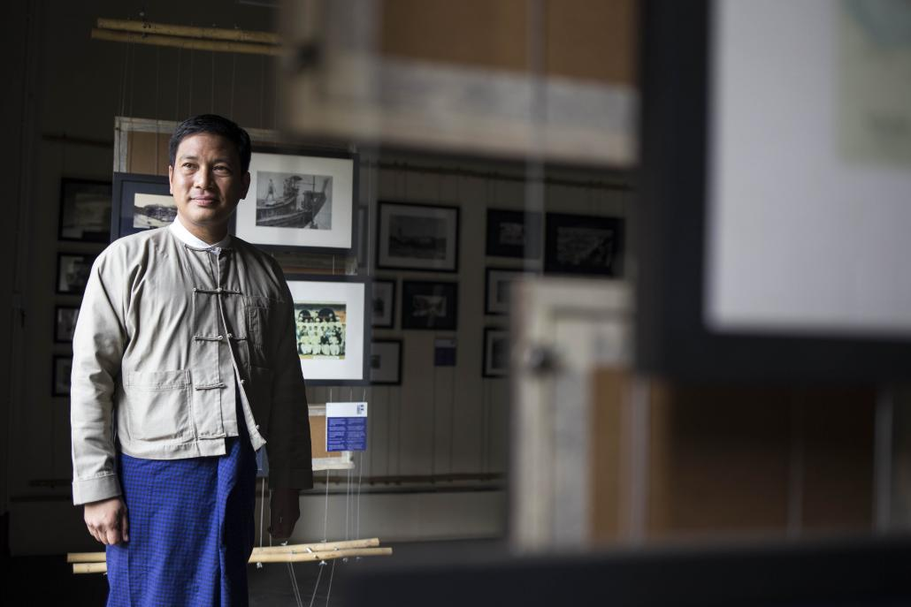
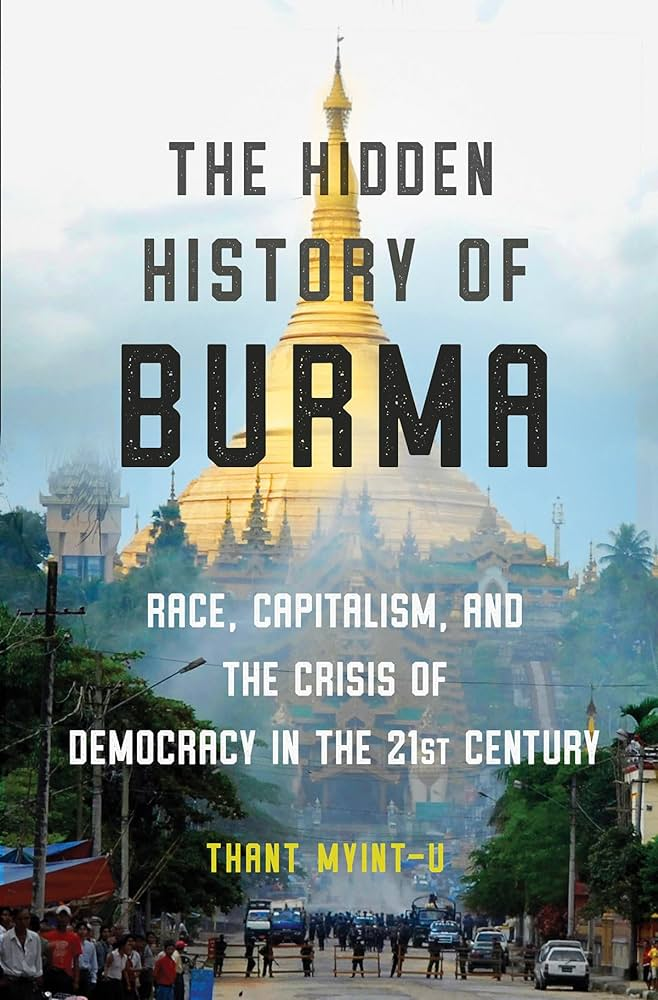
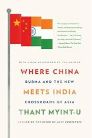
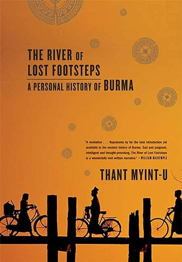
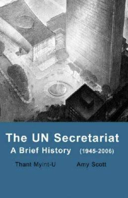
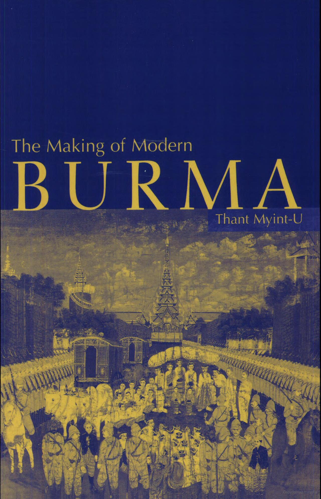

|  | |
| Born | 31st January 1966(age 58), New York City, New York, U.S |
|---|---|
| Alma mater | Havard University, Johns Hopkins University, University of Cambridge |
| Known for | Historian, Conservationist (Colonial Architechure, Yangon Heritage Trust) |
| Spouse | Sofia Busch |
| Children | Thurayn-Harri |
| Parent(s) | Tyn Myint-U, Aye Aye Thant |
| Relatives | U Thant (grandfather), Khin Lay Myint-U (sister), A-thi Myint-U (sister), Aye Myint Myint-U (sister) |
| Awards | Fukuoka Grand Prize, Padma Padma_Shri |
Thant Myint-U was born in New York City to Burmese parents. He grew up in Riverdale, Bronx at the home of his maternal grandfather, the then-Secretary-General of the United Nations U Thant. From 1971 to 1980, he studied at Riverdale Country School, a private college-preparatory day school in Bronx. He graduated from International School Bangkok in 1983. He has three sisters. Thant earned a B.A in government and economics from Harvard University, an MA in international relations and international economics from Johns Hopkins University, and his PhD in history from Cambridge University in 1996. From 1996 to 1999, he was a Fellow of Trinity College, Cambridge, where he taught history.
He served on three UN peacekeeping operations. He first served as a human rights officer from 1992 to 1993 at the UN Transitional Authority for Cambodia in Phnom Penh. In 1994, he was the spokesman for the UN Protection Force in the former Yugoslavia, based in Sarajevo. In 1996, he was a political adviser in the Office of the UN's Special Representative for Bosnia and Herzegovina. In 2000, he joined the UN Secretariat in New York. He worked first at the Office for the Coordination of Humanitarian Affairs, then at the United Nations Department of Political Affairs, and at the Policy Planning Unit as a chief in 2004. During this time, he was a member of the secretariat of the Secretary-General's Panel on Threats, Challenges and Change (High Level Threat Panel). From the late 2005 to early 2006, he was briefly a senior officer at the Executive Office of the Secretary-General. Aside from being chairman of the Yangon Heritage Trust, he was, from 2011 to 2015, a member of the National Economic and Social Advisory Council, special adviser to the Myanmar government for the peace process at the Myanmar Peace Centre, senior research fellow of the Myanmar Development Resources Institute, and member of the Fund Board of the (Myanmar) Livelihoods and Food Security Trust Fund. During a December 2019 book tour in the US, Thant expressed his forebodings about Myanmar's future. In an interview with Singapore's The Straits Times, Thant remarked that the threat of climate change made him pessimistic about the country's future. "I think whatever we think of the [Myanmar's] ledger in general, perhaps it comes to 50/50," he said. "When you add on what is almost certainly going to be the impact of global climate change on Burma, I think it's hard to be too optimistic right now.
Thant has written opt-in pieces for The New York Times, The Washington Post, the Los Angeles Times the International Herald Tribune, the London Review of Books, the New Statesman, the Far Eastern Economic Review, Time and The Times Literary Supplement. His book, The River of Lost Footsteps was on India's Monster and Critics' non-fiction bestsellers list for the fourth week of October 2007.
| Year | Title | Description | Cover |
|---|---|---|---|
| 12 November 2019 | Hidden History of Burma | Race, Capitalism, and the Crisis of Democracy in the 21st Century |  |
| 8 September 2018 | Where China Meets India | Burma and the New Crossroads of Asia |  |
| 8 January 2008 | The River of Lost Footsteps | A Personal History of Burma |  |
| 14 September 2007 | The UN Secretariat | A Brief History |  |
| 26 March 2001 | The Making of Modern Burma | Cambridge University Press |  |
For his efforts to preserve Yangon's built heritage, he was named by the Foreign Policy magazine as one of the "100 Leading Global Thinkers" in its annual list in 2013. He was voted 15th in Prospect magazine's annual online poll of the "World's Leading Thinkers" in 2014 in a list which feature many notable Indians including Kaushik Basu. In 2015, he received Fukuoka Prize, awarded by the city of Fukuoka. In 2018, he received Padma Shri, the fourth-ranked civilian award in India.